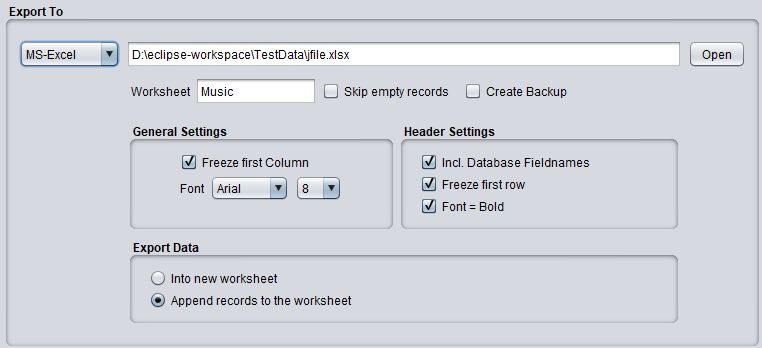

Export To MS-Excel

General Settings
- Freeze first Column
This places a scroll-lock on the first table column
- Font
Here you can select the font and font size to be used in the Excel table
Header Settings
- Include Headers
Defines whether the first row of the table should contain the database field headers
- Freeze Headers
This places a scroll-lock on the headers in the first row of the table
- Font = Bold
When activated it changes the font of the headers to bold
Note: The "Freeze Headers" and "Font=bold" options can only be accessed if you've activated the "Include Headers" option